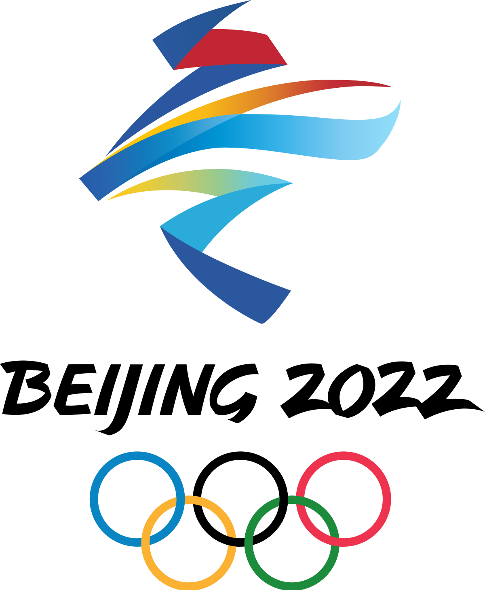

|  |
The 2022 Beijing Olympics
Having won the bid for the 2022 Olympic Winter Games on 31 July 2015, Beijing is set to become the first city in the world to have hosted both the summer and winter editions of the Olympic Games.
Three Competition Zones
Beijing will host all the ice events (curling, ice hockey and skating) and four snow events (snowboard big air and freestyle skiing big air, men’s and women’s), making full use of the legacy venues of Beijing 2008 in the spirit of Olympic Agenda 2020.
Seven New Events
The addition of seven new events -- women’s monobob, freestyle skiing big air (men’s and women’s), and mixed team events in short track speed skating team relay, ski jumping, freestyle skiing aerials and snowboard cross -- to Beijing 2022’s sports programme will bring about the most gender-balanced Olympic Winter Games to date, with more female athletes (45.44 percent) and women's events than at any previous Games.
Spring Festival (Chinese New Year)The Olympic Winter Games Beijing 2022 will take place in February 2022, coinciding with the Chinese New Year (Spring Festival), the most important holiday in China. Local residents are looking forward to welcoming athletes from around the globe to enjoy the Chinese New Year festivities, the majestic landscape and the rich cultures of Beijing, Yanqing, and Zhangjiakou, as they charm the world with the beauty of winter sports. |
||||||||
| |||||||||